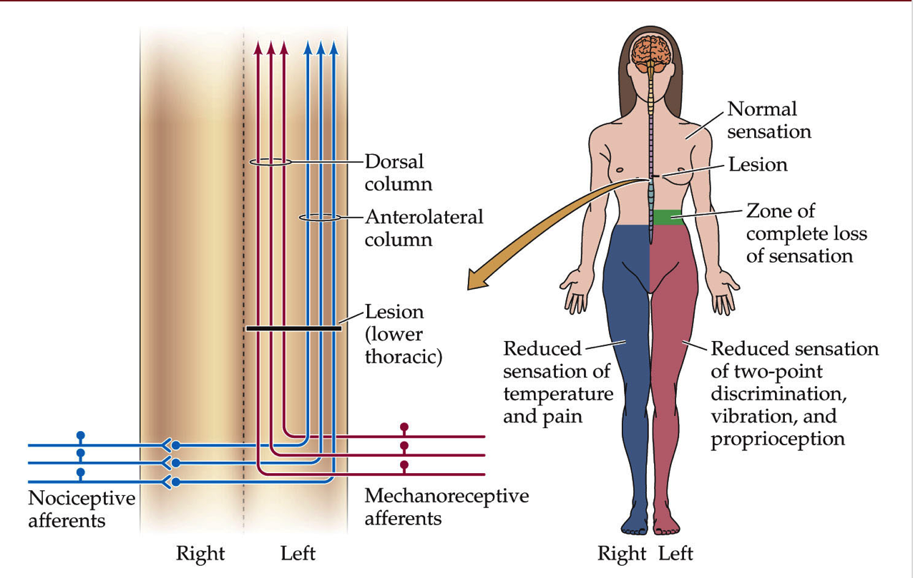
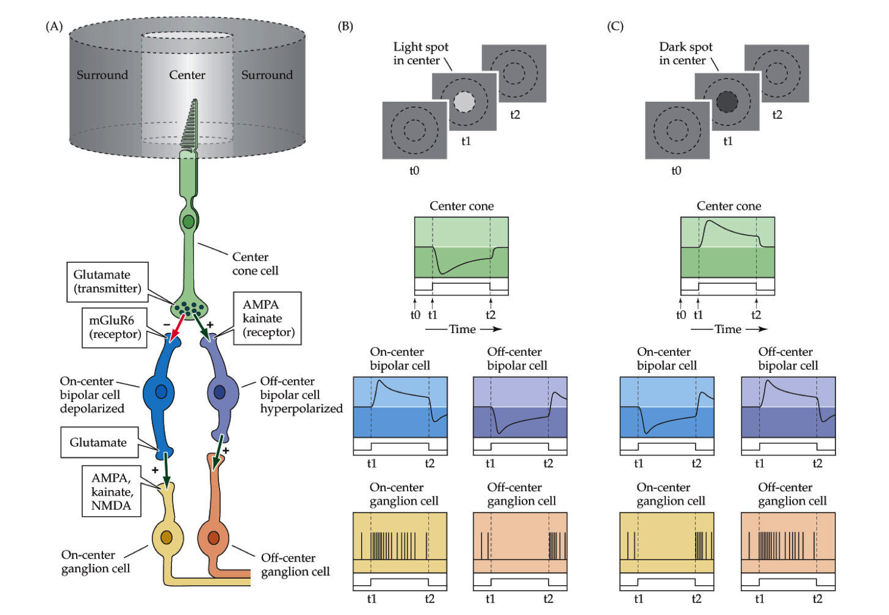
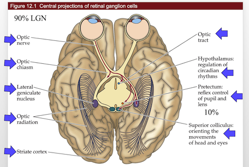
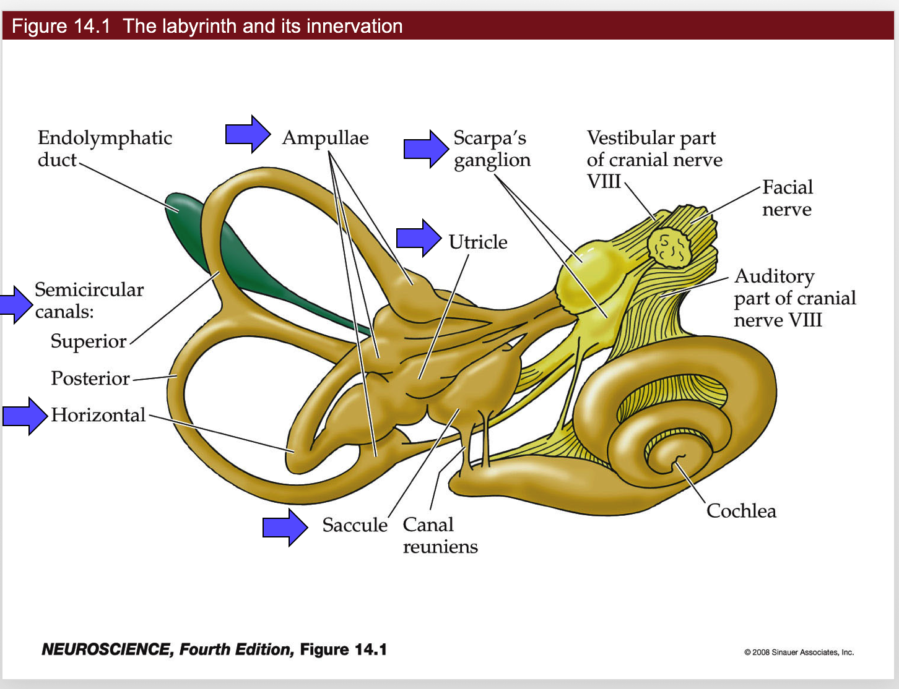
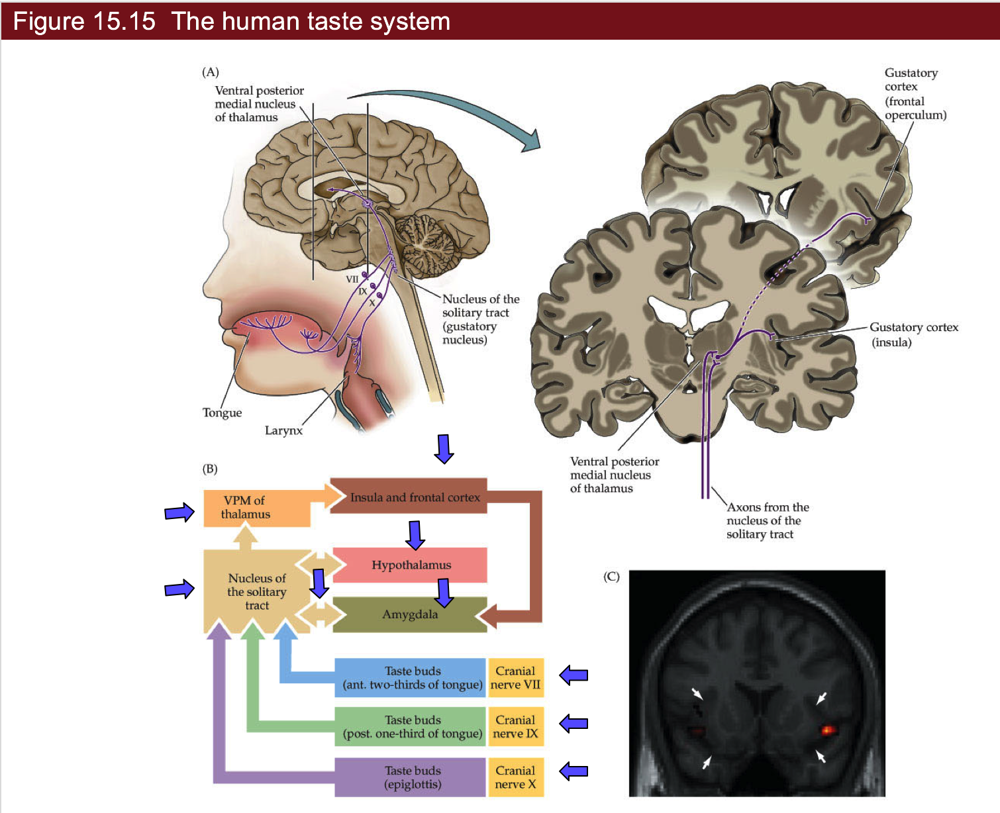

Sensory input#
notes from Purves et al. "Neuroscience", 5th edition (chapter numbers in headers) + Intro to neurobiology course at UVA
About this chapter
One section per sense, following Purves chapters 9 to 15. Each follows the same plan: the receptor cells and what they are tuned to, the relay stations on the way up (dorsal root or cranial ganglia, brain stem nuclei, a thalamic nucleus), and the cortical map at the end.
Start with the somatosensory section. Its cheat sheet sets up the vocabulary and the three processing motifs (feedback gain, feedforward anticipation, center-surround inhibition) that come back in every other sense, and its pathways are the template the others are compared with: pain crosses the midline early, vision splits off to the colliculus, and the vestibular system skips the cortex entirely.
Chapter outline: 7 sections
- 9- somatosensoryTouch and body position.
- 10 - nociception1 figurePain uses its own fibers (Aδ for fast pain, C for slow) and its own route: nociceptors synapse in the dorsal horn and cross the midline right away, while touch stays on the same side until the brain stem.
- 11 - vision (eye)1 figureIn photoreceptors light reduces activity: cGMP-gated channels close when light hits.
- 12 - central visual system1 figureMost retinal ganglion cell axons go through the LGN of the thalamus to V1, a six-layer sheet organized into orientation and ocular dominance columns.
- 13 - auditory systemThe middle ear boosts sound onto the oval window, the cochlea sorts it by frequency along its length, and inner hair cells turn the motion into transmitter release.
- 14 - vestibular system1 interactive1 figureThe same hair cells as the cochlea, used to sense head rotation (semicircular canals) and tilt (utricle and saccule).
- 15 - chemical senses1 figureOnly the taste pathway is shown: taste buds, cranial nerves, the nucleus of the solitary tract, the thalamus and gustatory cortex.
9- somatosensory#
Touch and body position. Dorsal root ganglion neurons carry signals from skin and muscle into the spinal cord with almost no processing; the brain stem, thalamus (VPL/VPM) and S1 do the rest.
Cheat sheet#
vocab
nerve - bundle of axons
tract - bundle of axons in CNS
nucleus - bundle of neurons related to some function
midline - center of nervous system
brain tends to be lateralized - one side is given control
ex. speak almost exclusively from left side of brain
information processing
feedback (gain)
almost always with glutamatergic / GABA
feedforward - anticipation
estimate things before they happen
adjust your behavior in advance of the world (ex. lean before you hit a table)
center-surround inhibition (spatial gain)
if you touch yourself, brain enhances sensitivity of one point by suppressing information from around it
Sensory system overview#
Dorsal root ganglion cells are pseudounipolar: one process runs from the skin straight into the spinal cord, with the cell body off to the side, and they do very little processing. Each ganglion serves one stripe of skin (a dermatome), and how finely you can tell two points apart depends on how densely the skin is innervated.
we have dorsal root ganglia (DRG) on spinal cord
axon goes to CNS
dendrites go everywhere
pseudounipolar - born polar but become uni-polar
dendrite goes straight into axon with cell body off to the side
do very little processing
dorsal horn - top layer that controls sensory information
in the brain stem, these are called cranial ganglia
special one is trigeminal ganglia (sensory receptors for face)
oxytocin important clinically
Trp channels - connected mechanically into membrane
dermatomes
map of sensory parts to brain
segments of spinal cord correspond to stripes across your body
brain to feet: cervical, thoracic, lumbar, sacral
shingles - virus where you get stripes of sores - single DRG
pops out the skin on the dendrite of one DRG
peripheral damage won’t give you stripes of pain
feeling resolution - depends on density of neurons innervating skin
more neurons - small receptive fields
two-point discrimination test - poke you at different points and see if you can tell if the points are different
higher discrimination is better
discrimination is different that sensitivity (like how it hurts when wounded)
4 neuron classes#
Sensory neurons differ in what their endings are tuned to and how fast they conduct. Bigger, myelinated fibers (proprioceptors, touch) are fast; thin unmyelinated C fibers (slow pain, temperature, itch) are slow.
they have certain structures that tune them into certain kinds of vibrations
Proprioception
muscle spindles - on every neuron - fastest
measures stretch on every muscles
lets you know where your arm is
Golgi tendon organ
measures tension on tendon
safety switches - numb your body if you’re over-stressing something (make you let go of hanging on cliff)
Ia II - touch neurons
superficial - most sensitive
Merkel: hi-res, slow adapt
Meissner: hi-res, fast adapt
deeper - sense vibrations, pressure 3. Ruffini: low-res, slow adapt 4. Pacinian: low-res, fast adapt
these are in order of depth
diabetes - tissue loss and pain / numbness are lost
Adelta - fast pain
C fibers - pain, temperature, itch
very slow, stay on
no myelination
Pruritus - newly discovered set of sensory neurons
between pain/touch - itch neurons
new in mice: massage neurons
can only fire by stimulating in certain pattern
goes to emotion center not knowledge - pleasure
speed proportional to diameter, myelination
adaptation
some adapt slowly (you keep feeling something)
some adapt quickly (stop feeling)
if you move finger slightly, start firing again when changed
better if you feel cockroach that starts moving
Pathways#
Touch from the upper body goes through the cuneate nucleus, from the lower body through the gracile nucleus, and from the face through the trigeminal ganglion. All of it passes the thalamus (VPL, or VPM for the face) on the way to S1, while proprioception goes to the cerebellum.
upper-body
S1 cortex - primary somatic sensory cortex - this is the knowledge of where was touched
VPL - everything accumulates here in the thalamus then goes to
Cuneate nucleus - everything goes into this
lower-body (trunk down)
everything in the lower body goes to Gracile nucleus - in brain stem
special case - sensory for face
trigeminal ganglion connects into vpm (thalamus) then goes into S1 cortex
proprioceptive pathways
starts in lower body
axons split - half go up to Clark’s nucleus
half go back into muscles
Clark’s nucleus goes straight into cerebellum
starts in upper body - goes straight into cerebellum
thus cerebellum have map of where / how tense muscles are
Representation#
Cortex gives each body part area in proportion to how much input comes from it, so the lips and hands get the most. The map changes with use: after an amputation, neighboring areas grow into the lost space.
cortex - this is where understanding is
dedicates area based on how many neurons coming in
lips / hands have more area
S1 - primary somatosensory cortex
most body parts
neurons from functionally distinct columns
cortex assigns space based on how much info comes in
after amputation and time, map grows into lost space
map is different when different stimuli are given to fingers
S2 - secondary somatosensory cortex
processes and codes information from S1
throat, tongue, teeth, jaw, gum
Pathway#
The same routes again, as numbered relay stations.
mechanosensory
DRG
Cuneate, Gracile
VPL
S1
face mechanosensory
trigeminal ganglion
principal nucleus of trigeminal complex
vpm
S1
proprioception
lower body
muscle spindles split
half go to motor neurons
other half go to Clark’s nucleus
clark’s nucleus -> cerebellum
upper body - straight to the cerebellum
10 - nociception#
Pain uses its own fibers (Aδ for fast pain, C for slow) and its own route: nociceptors synapse in the dorsal horn and cross the midline right away, while touch stays on the same side until the brain stem. Cortex then splits knowing where it hurts (somatosensory cortex) from caring that it hurts (insula).
Review#
Pain has its own receptors (Trp channels opened by heat, cold, or chemicals such as capsaicin and menthol) and two fiber types. The later bullets cover how pain gets turned up (hyperalgesia, allodynia) and turned down (serotonin, mechanoreceptors inhibiting nociceptors).
chronic pain is very import clinically
cortex - lets you know if you are sensing something
loss-of-function lesion - piece of cortex is lost - lose awareness
can come from stroke, migraine-aura
gain-of-function lesion = excitatory lesion - like epilepsy
cortex comes on when it shouldn’t
increased awareness
can come from stroke / migraine
“sixth sense” - measuring stretch of all your muscles in cerebellum
nociception = pain
has nociceptors - neurons that do nociception
thermoceptors - neurons that sense temperature
two classes of linking receptors
Adelta fibers - fast pain
C fibers - slow and chronic
Trp channels - mechanically or thermally gated
let Na+ in
trpV heat - binds capsaicin
in the class of vanilloids
birds not capsaicin sensitive
trpM cold - binds menthol
adapts in minutes - stop feeling cold after a while
synapses of nociceptors go to dorsal horn of drg
nociceptor goes contralateral (must cross midline) - if you cut left side of spinal chord, lose - mechanoception (ipsilateral) from left and nociception (contralateral) from right
mechanoreceptors, by contrast, send axon up the spinal cord
dorsal horn has laminal structure (has layers)
know where pain is
somatosensory cortex
care about pain
insular cortex - emotional part of brain
whether or not you care about pain
pairs up with other senses
can have both loss-of-function and gain-of-function lesions in both places
referred pain map - map that refers to a specific problem (ex. esophagus)
visceral pain - don’t know where the pain is
hyperalgesia - increased pain sensitivity
pain sensing neurons are hyperactive because of inflammation
pain sensing neuron releases substance P into Mast cell or neutrophil which releases histamine which strengthens receptor
prostaglandins activate nococeptors
allodynia - when mechanosensation hurts - not understood
turning off pain - add serotonin
exercise
lack of serotonin ~ mood disorders
central sensitization: allodynia
these mechanisms work through introception
senses chemical imbalances
phantom limbs and phantom pain - if you lose a limb and still feel pain
mechanoreceptors inhibit nociceptors
Pathway#
nociception

Fig. 94 Figure 1. A lesion on the left side of the lower thoracic cord. Mechanosensory axons (red) go up on the same side, so the left leg loses touch, vibration and proprioception. Nociceptive axons (blue) cross the midline as they enter, so the right leg loses pain and temperature.#
same as mechanosensory except goes all the way to thalamus
doesn’t stop in brainstem
crosses the midline after first synapse
visceral pain
axons mainline straight up, go through vpl, go straight to insular cortex
11 - vision (eye)#
In photoreceptors light reduces activity: cGMP-gated channels close when light hits. Bipolar cells split the signal into on and off pathways, and horizontal cells subtract the surround to build contrast.
most of visual system is to read faces
eye
aqueous humor
posterior chamber
lens
ciliary muscles
retina
fovea
optic disk
optic nerve and retinal vessels
to see far, stretch lens = accomodation
retina - rods and cones are at back
cones - color
retinal ganglion cells sends down signal
12 days to turnover whole photoreceptor disks into PE (pigment epithelium)
PE is what the rods / cones are in
PE contains optic disks containing rhodopsin protein that is sensitive to light that break off of rods / cones
light leads to inhibition
melanopsin - receptor for blue light
Circuits#
In the dark, cGMP holds the photoreceptor’s channels open. Light activates rhodopsin, which turns on a phosphodiesterase that breaks down cGMP, and the channels close.
accomodation - stretching lens uncrosses lines
function photoreceptor
usually cGMP is letting in Na/Ca
Ca provides negative feedback here
when light hits, retinal inside rohodopsin activates phosphodiesterase - breaks down cGMP so channel closes and they aren’t let in
light on middle
depolarizes cone
excites oncenter
inhibits offcenter
these adjust quickly
horizontal cells - takes positive input from photoreceptor and inhibits it back
inhibits horizontal cells else around it - creates contrast
have these for each color
Pathway#

Fig. 95 Figure 2. The cone to bipolar to ganglion cell circuit. Light hyperpolarizes the center cone; through mGluR6 this depolarizes the on-center bipolar cell and through AMPA/kainate receptors it hyperpolarizes the off-center one. On-center ganglion cells fire to a light spot in the center (B), off-center ones to a dark spot (C).#
rods / cones (2). horizontal cells - regulate gain control, how fast adapts, contrast adaptation
bipolar cells (4). amacrine cells - processing of movements
retinal ganglion cells
go into thalamus then to cortex (6). small amount go into brain stem and control mood / circadian rhythms
12 - central visual system#
Most retinal ganglion cell axons go through the LGN of the thalamus to V1, a six-layer sheet organized into orientation and ocular dominance columns. A smaller share goes to the brain stem.
cortex is a pizza box
has columns
autophagy - process by which cells eat parts of themselves
nobel 2016
cones - color
12 day cycle for processing optic disks
photoreceptors have cyclic G-activated channel
light shuts down photoreceptors
cell decreases in activity
very roughly - each cone connects to cone bipolar cell
this gets represented by one column in the cortex
15-30 rods connect to 1 rod bipolar cells
cortex has 6 layers
each has tons of neurons, mostly pyramidal neurons
column is a section through the 6 layers - all does about the same thing
orientation columns responds to specific x,y
has subregions that respond to specific orientations
ocular dominance column - both eyes for same coordinate go to same spot
dominated by one eye
distance
far cells
tuned cells
near cells
V4 in temporal lobe - object recognition
Pathways#

Fig. 96 Figure 3. Central projections of retinal ganglion cells. About 90% go through the optic nerve, chiasm and tract to the LGN and on to striate cortex; the rest go to the hypothalamus (circadian rhythm), pretectum (pupil reflex) and superior colliculus (orienting the head and eyes).#
overall
V1
V2
V4 or MT
central projections
retinal ganglions
all go through optic stuff
13 - auditory system#
The middle ear boosts sound onto the oval window, the cochlea sorts it by frequency along its length, and inner hair cells turn the motion into transmitter release. The MSO compares arrival times at the two ears to locate a sound.
ear parts
outer
middle
tympanic membrane
inner
cochlea - senses the sound
oval window
round window - not understood
conductive hearing loss - in the outer/middle ear
sensorineural hearing loss - in the cochlea
can’t be fixed with hearing aids
humans
2-5kHz ~= human speech (can sometimes hear more)
30-100x boost for tympanic membrane
this differs between people
200x focus onto oval window
cochlea
4 layers
inner hair cells - what you hear with
outer hair cells - generate sound
generates noise at every frequency except one you want to hear
otoacoustical emmision - low buzz that is produced
tenitis - ringing in the ears
can be internal
can be peripheral - generated by otoacoustical emmision
high frequencies right next to cochlea
low frequencies on distal tip
human high frequency cells die with age
hair cells
bundle of cilia
have an orientation
kinocilium is the tallest
tall ones are in the back
dying hair cells - can’t be replaced 1. 2. loud sounds 3. certain antibiotics
auditory pathwayz
MSO - medial superior olive - decides where the sounds is coming from
takes input from right / left ear, decides which came in first
medial geniculate complex of the thalamus
brain shape
folds are pretty random
phrenology - shape of skull was based on brain
thought it could determine personality
false
Hsechl’s Gyrus folding pattern is not random
argument that if you have one, you are more musical
any sounds is made up of a bunch of frequencies
Circuits#
K depolarizes hair cells, lets in Ca, releases vesicles
14 - vestibular system#
The same hair cells as the cochlea, used to sense head rotation (semicircular canals) and tilt (utricle and saccule). These circuits bypass cortex and drive fast reflexes such as the vestibulo-ocular reflex.
very related to cochlea
same hair cells
differences

Fig. 97 Figure 4. The labyrinth: three semicircular canals with an ampulla at the base of each, the utricle and saccule, and Scarpa’s ganglion sending axons into the vestibular part of cranial nerve VIII, next to the cochlea.#
vestibular system doesn’t use cortex (you don’t think about it)
goes right into spinal chord
controls eye movements
one of the fastest circuits in the brain
clinically important
you have to be able to have your balance
each column is computational unit of the cortex
ocular dominance column
one for each eye
labyrinth and its innervation
semicircular canals
can only measure one axis of rotation
remember horizontal canal - measures turning head left to right
this measures acceleration
like a hoola hoop filled with glitter
has ampulla at one place in the hoop
cupula - sits over the ampulla’s hair cells
if the “glitter” hits the cupula, it will bend the hair cells
if you keep spinning, fluid starts moving and you stop detecting movement
this means the canals adapt mechanically
if you stop spinning, fluid keeps moving and system thinks you’re spinning the other way
right horizontal canal activated by turn to the right
same for left
scarpa’s ganglion - has hair cells inside
sends axons into vestibular nuclei
lots of fluid (high in K+)
macula - place where all the hair cells are
Ampullae - at base of canals
hair cells all in the same direction
utricle and saccule - measure head tilt
hair cells in multiple orientations
these contain otoconia
these are little crystals that move with gravity
measure acceleration and tilt
tilts do not adapt - they keep firing while you’re leaned back
they basically report tilt / position at all times
tiplink - connect cilia together for hair cells
when they move, tiplink move, pull on ion channels
motor on connected hair cell moves up and down to generate correct amount of tension
motor uses myosin and actin
harming these proteins can cause deafness
both eyes must always be looking in the same direction
also must be sitting over image for a while
ipsilateral - same side
contralateral - different side
vestibular ocular reflex VOR - turn your head to the right, eyes move left
doesn’t require cortex
only have to learn excitatory
15 - chemical senses#
Only the taste pathway is shown: taste buds, cranial nerves, the nucleus of the solitary tract, the thalamus and gustatory cortex. The one bullet notes that the receptors here are GPCRs that use cAMP.

Fig. 98 Figure 5. The taste pathway. Taste buds send signals through cranial nerves VII, IX and X to the nucleus of the solitary tract, then through the VPM of the thalamus to gustatory cortex in the insula and frontal operculum.#
cAMP is used by GPCR
Key ideas
Each sense follows the same plan: receptor cells, relay stations in the spinal cord or brain stem, a thalamic nucleus, then a map in cortex.
Sensory fibers are tuned by their endings and sorted by speed: large myelinated fibers for proprioception and touch, thin unmyelinated C fibers for slow pain, temperature and itch.
Touch stays on the same side until the brain stem, while pain crosses the midline at its first synapse, so one spinal lesion removes touch on one side and pain on the other.
Cortical maps give area by the amount of input, and they reshape with use.
In the retina, light closes cGMP-gated channels, and horizontal cells subtract the surround to build contrast.
The cochlea sorts sound by frequency along its length; the semicircular canals adapt during a steady spin because the fluid catches up.